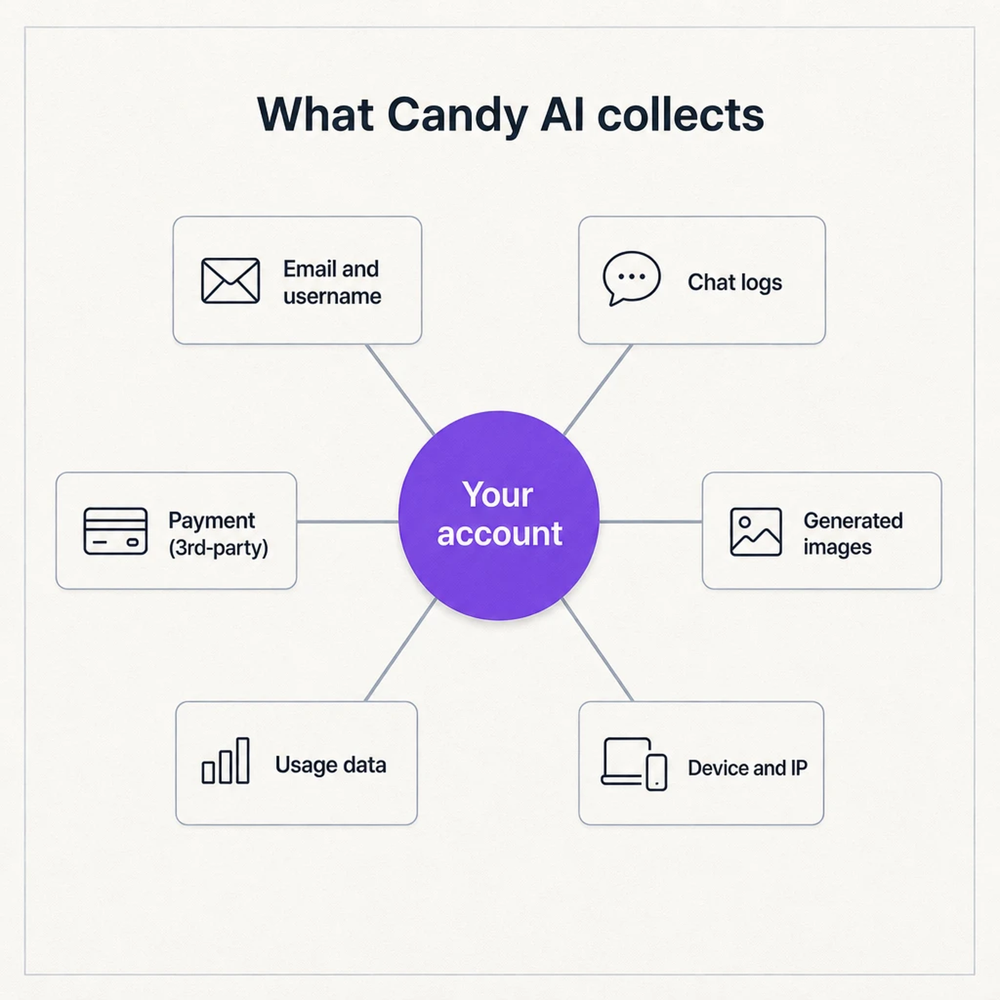
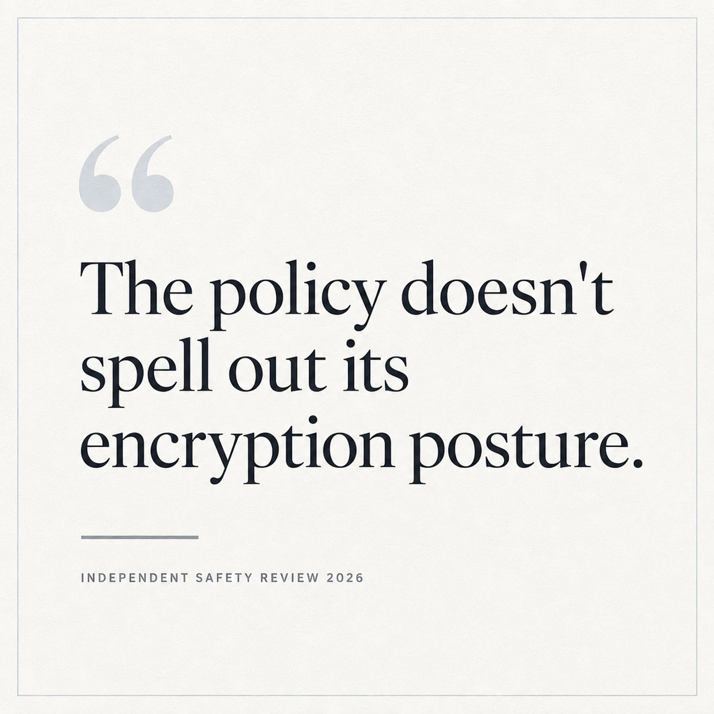
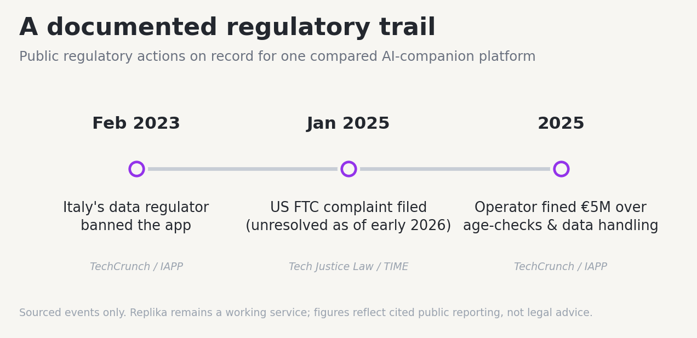
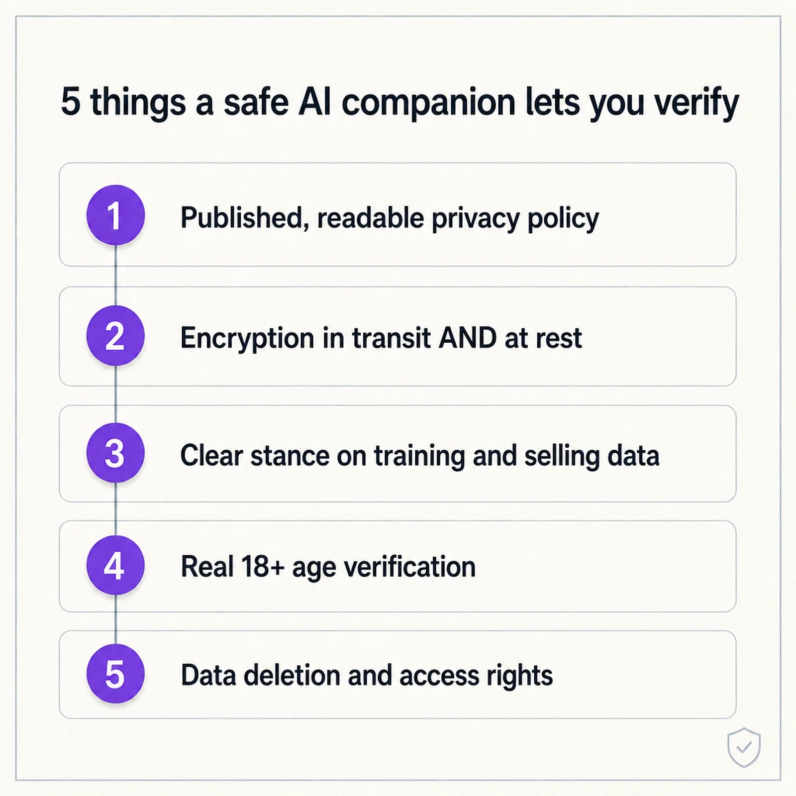
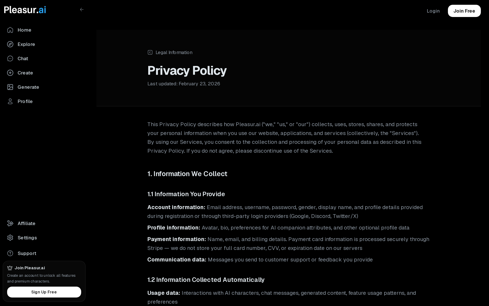

Is Candy AI Safe to Use in 2026? What Users Need to Know
Candy AI is a legitimate, widely used AI companion platform, not a scam, and it encrypts conversations in transit. But reviewers have noted that its privacy policy leaves open questions, including whether your messages help train its models. If you want a platform that publishes its full data practices for you to read, it's worth comparing options before you commit.
So the honest answer is "safe with caveats." Candy AI works, people pay for it, and there's no public breach tied to it. The thing worth weighing is data handling, and that's easiest to judge side by side. Below you'll find a sourced four-platform comparison, a five-point checklist you can apply to any app, and tight answers to the six questions people ask most.
Is Candy AI safe? The honest, sourced verdict
The real question behind "is Candy AI safe to use" isn't whether it's a scam. It's how comfortable you are with data handling that reviewers describe as under-documented rather than malicious.
Here is what Candy AI collects, according to a Scribe safety breakdown of Candy AI: your email and username, chat logs, the images you generate, your device and IP details, usage and browser-fingerprint data, and payment information processed through a third party. That's a wide net, though not unusual for the category — an AI Companion Guides privacy review reaches a similar read, noting Candy.ai stores image-generation data and is vague on deletion.

On the question people ask most — does it sell or train on your chats? — the same breakdown reports that Candy AI does not sell data "in the traditional sense," but may use aggregated, anonymized conversation data to train its models. State that plainly, because it's normal for the category and worth knowing, not a gotcha.
The gap reviewers flag is transparency. One AI Top Tools safety guide reports that Candy AI's chat data "isn't encrypted" and that the policy doesn't spell out its encryption posture — so it reads as unstated rather than confirmed. Billing is handled by a third-party processor and appears discreetly on your statement (reported as "Everai"), which matters if a shared card statement is a concern for you.
None of that makes Candy AI unsafe in any documented sense. It makes it a platform whose data practices you partly have to take on trust. Whether that's acceptable is easier to judge against alternatives, so here are four side by side.

Candy AI vs Replika vs Nomi AI vs Pleasur.ai: a safety comparison
Across data storage, a published privacy policy, regulatory history, and age verification, these four platforms differ most on one thing: how much of their data handling you can actually read for yourself. Only one publishes its full policy line by line.
| Candy AI | Replika | Nomi AI | Pleasur.ai | |
|---|---|---|---|---|
| Data storage (where conversations go) | Stores chat logs, generated images, account, device/IP and usage data; may use aggregated, de-identified chats to train models (source: Scribe; AI Companion Guides) | Stores data on secure servers with in-transit (SSL) encryption; called "legitimate" but "not risk-free" (source: NordVPN; ExpressVPN) | Operated by Glimpse.ai, Inc.; signup requires a Google/Apple account plus name and date of birth, and it collects chats, device and IP data (source: Nomi privacy policy). Read its current policy in full yourself | Encryption in transit (TLS/SSL) and at rest, retention terms, and access/deletion rights set out in its published privacy policy |
| Published privacy policy | Has a policy; reviewers note it leaves open questions (source: Scribe) | Yes, published by Luka, Inc. (source: NordVPN) | Yes — a current published policy; read it before signing up | Yes — a full published privacy policy you can read line by line |
| Regulatory history | No major regulatory action found in cited sources | Italy's regulator banned the app in February 2023 and fined operator Luka €5M in 2025 over age-verification and data-handling failures (source: TechCrunch; IAPP). A separate US FTC complaint filed in January 2025 alleged deceptive and data-handling practices and remained unresolved as of early 2026 (source: Tech Justice Law; TIME) | No known regulatory action found | No known regulatory action found |
| Age verification (18+ posture) | Soft 18+ self-attestation at signup, with stricter checks for explicit content in some regions (source: Scribe) | 18+ posture; regulators cited the absence of an age-verification mechanism in the Italy action (source: NordVPN; IAPP) | Asks for a date of birth at signup; verify its 18+ posture yourself (source: Nomi privacy policy) | 18+ only, with an age-attestation gate and a stated no-under-18 policy, per its published privacy policy |
A quick read of each, attributed and without spin. Candy AI is legitimate, with data handling that reviewers find under-documented. Replika carries a real regulatory history — it remains a working service, but Italy's action is on the record, and our take on switching lives in our guide to the best Replika alternative in 2026. Nomi AI has a thin public paper trail; no regulator has acted against it in our sources, but the burden is on you to read its policy before you sign up. Pleasur.ai is the one platform here that puts its own data practices on the table for you to verify — that's a transparency point, not a claim that it's the "safest."

A table tells you where each platform stands today. The more useful skill is being able to vet any companion app yourself, which is what the next section is for.
What to look for in a safe AI companion
A safer AI companion app does five things you can verify before you sign up: it publishes a real privacy policy, encrypts your data, is clear about training use, checks you're 18 or over, and lets you delete what it holds. Run any app through this list.
- A published, readable privacy policy. You can find and read it before signing up — actual terms, not a vague one-paragraph summary.
- Encryption in transit and at rest. Your conversations are protected on the wire and on the server. In-transit encryption is table stakes; what's worth confirming is that the policy actually says so, for both.
- A clear stance on training and selling data. Whether your chats train models or get sold is stated in plain language, not buried.
- Real 18+ age verification. An explicit adult-only gate, not a checkbox you tick on the way in.
- Data deletion and access rights. You can request a copy of, or the erasure of, your data and conversations.

If you want the longer version, with what to look for in each policy clause, our AI companion safety checklist walks through it. Those same five points also answer the questions people ask most.

Frequently asked questions
Is Candy AI safe to use? For most users, yes. Candy AI is a legitimate, widely used platform, not a scam, and it encrypts conversations in transit. Treat it as safe-with-caveats: reviewers flag open questions in its privacy policy, so confirm the data practices you care about before you subscribe (source: Scribe).
Is Replika safe? Replika is a legitimate service by Luka, Inc. that encrypts data in transit but is "not risk-free" (source: ExpressVPN). Italy's regulator banned it in February 2023 and fined Luka €5M in 2025, and a January 2025 FTC complaint alleged data issues (source: IAPP). See our best Replika alternative in 2026.
Is Nomi AI safe? No known regulatory action against Nomi AI appears in our cited sources, but its public privacy record is thin. It is operated by Glimpse.ai, Inc. and asks for a date of birth at signup; read its published privacy policy and confirm its 18+ posture yourself before signing up. We don't assert it's safe or unsafe in absolute terms.
Which AI companion is most private? The most private app is the one that publishes its full data practices so you can verify them. Among these four, Pleasur.ai publishes a full privacy policy covering encryption, deletion rights and 18+ posture that you can read yourself.
Does Pleasur.ai store my conversations? Pleasur.ai's published privacy policy describes how conversation data is handled: encrypted in transit and at rest, with access and deletion rights, and retained for a limited period after deletion for legal and business reasons. Read the full policy yourself before deciding.
What should I look for in a private AI companion app? Look for a published privacy policy, encryption in transit and at rest, a clear stance on training and selling data, real 18+ verification, and data-deletion rights. See our AI companion safety checklist for the full version.
The bottom line
"Safe" isn't a yes-or-no badge you can stick on an AI companion. It's whether you can read and verify how an app handles the most private things you'll type into a phone. Candy AI clears the basic bar — it's legitimate and encrypted in transit — but it leaves part of its data handling undocumented, and that's the piece only you can decide about.
If you'd rather start from what a platform commits to in writing, you can build a companion with Pleasur.ai's AI Companion Creator and read its published privacy policy first. It's an 18+ platform, and the policy is there to be checked — not a guarantee, but something you can verify yourself before you decide.